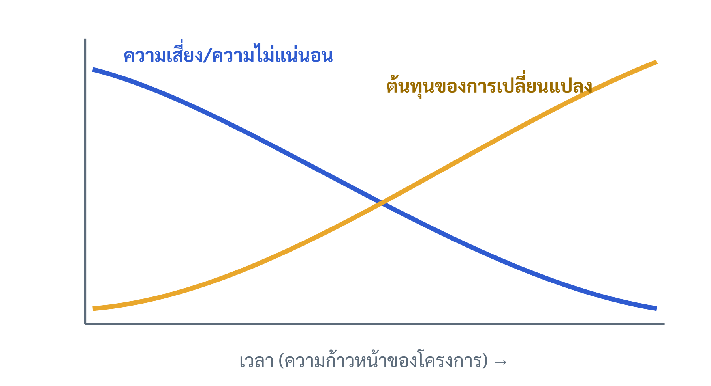
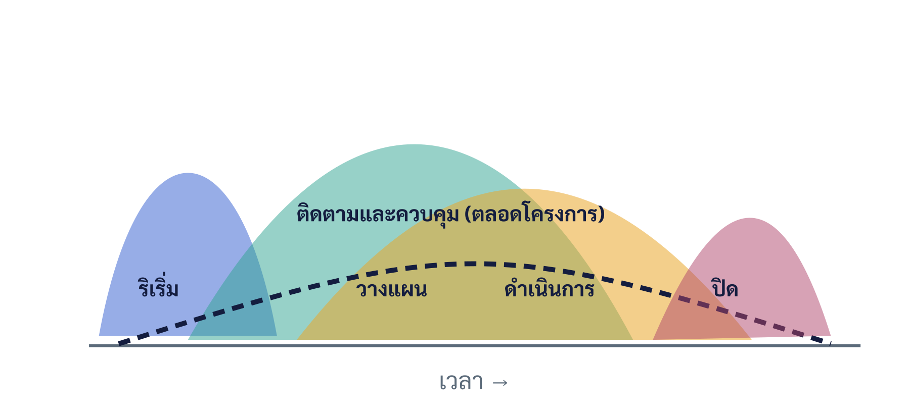

บทที่ 2 วงจรชีวิตโครงการและกระบวนการบริหารโครงการ
เมื่อศึกษาบทนี้จบแล้ว นิสิตสามารถ
- อธิบายความหมายและความสำคัญของวงจรชีวิตโครงการ และเปรียบเทียบกับกลุ่มกระบวนการบริหารโครงการได้
- อธิบายเฟสต่าง ๆ ของวงจรชีวิตโครงการและผลงานส่งมอบสำคัญในแต่ละเฟสได้
- อธิบายพฤติกรรมของความเสี่ยง ต้นทุนของการเปลี่ยนแปลง และการใช้ทรัพยากรตลอดวงจรชีวิตได้
- อธิบายกลุ่มกระบวนการบริหารโครงการทั้ง 5 กลุ่ม และความสัมพันธ์กับพื้นที่ความรู้/โดเมนการดำเนินงานได้
- เปรียบเทียบรูปแบบวงจรชีวิตแบบทำนายได้ วนซ้ำ เพิ่มทีละส่วน ปรับตัว และแบบผสมได้
- อธิบายหลักการของจุดตัดสินใจ (Stage Gate) และเชื่อมโยงกับธรรมาภิบาลโครงการได้
- อธิบายปัจจัยความสำเร็จและความล้มเหลวของโครงการ และประยุกต์ใช้กับแผนโครงงานธุรกิจสมัยใหม่ได้
2.1 บทนำ
โครงการทุกโครงการมี "จังหวะชีวิต" ของตนเอง ตั้งแต่จุดที่เป็นเพียงแนวคิด ไปจนถึงการส่งมอบผลลัพธ์และปิดตัวลง การเข้าใจจังหวะนี้อย่างเป็นระบบช่วยให้ผู้บริหารโครงการวางแผน จัดสรรทรัพยากร และควบคุมงานได้อย่างเหมาะสมกับแต่ละช่วงเวลา
ในบทที่ 1 ผู้เรียนได้เข้าใจว่าโครงการคือความพยายามชั่วคราวที่มีจุดเริ่มต้นและจุดสิ้นสุด บทที่ 2 นี้จะเจาะลึกว่าในช่วงระหว่างจุดเริ่มต้นและจุดสิ้นสุดนั้น โครงการเคลื่อนผ่าน "เฟส" (phase) ต่าง ๆ อย่างไร และผู้บริหารต้องดำเนิน "กระบวนการ" (process) ใดบ้างในแต่ละช่วง สองแนวคิดนี้ คือ วงจรชีวิตโครงการ (Project Life Cycle) และกลุ่มกระบวนการบริหารโครงการ (Project Management Process Groups) มักถูกสับสนกัน แต่มีความหมายต่างกันและเป็นรากฐานสำคัญของการบริหารโครงการทั้งเล่ม (PMI, 2017)
ความเข้าใจเรื่องวงจรชีวิตยังช่วยให้ทีมโครงงานธุรกิจสมัยใหม่มองเห็นภาพรวมของงานตลอดภาคการศึกษา รู้ว่าช่วงใดควรทุ่มเทกับการวางแผน ช่วงใดควรเร่งการดำเนินงาน และช่วงใดต้องเตรียมการส่งมอบและถอดบทเรียน
2.2 ความหมายและความสำคัญของวงจรชีวิตโครงการ
วงจรชีวิตโครงการ หมายถึง ลำดับของเฟสที่โครงการเคลื่อนผ่านตั้งแต่เริ่มต้นจนสิ้นสุด แต่ละเฟสมีจุดเน้น ผลงานส่งมอบ (deliverable) และจุดตัดสินใจของตนเอง วงจรชีวิตเปรียบเสมือน "โครงกระดูก" ที่จัดระเบียบการทำงานให้เป็นช่วง ๆ เพื่อให้บริหารจัดการและติดตามได้ง่ายขึ้น (Larson & Gray, 2021)
ความสำคัญของการแบ่งโครงการเป็นเฟส มีหลายประการ ประการแรก ช่วยลดความซับซ้อนโดยแบ่งงานใหญ่เป็นช่วงที่จัดการได้ ประการที่สอง สร้างจุดทบทวนและตัดสินใจเป็นระยะ ทำให้สามารถประเมินความคุ้มค่าและตัดสินใจว่าจะเดินหน้า ปรับแก้ หรือยุติโครงการก่อนสูญเสียทรัพยากรมากเกินไป ประการที่สาม ช่วยให้การจัดสรรทรัพยากรและงบประมาณสอดคล้องกับความต้องการจริงของแต่ละช่วง และประการสุดท้าย ทำให้ผู้มีส่วนได้ส่วนเสียเห็นความก้าวหน้าเป็นรูปธรรม (Kerzner, 2022)
พึงแยกแยะว่า "วงจรชีวิต" ตอบคำถามว่าโครงการ ผ่านช่วงใดบ้าง ตามลำดับเวลา ขณะที่ "กลุ่มกระบวนการ" (หัวข้อ 2.5) ตอบคำถามว่าใน แต่ละช่วงต้องทำกิจกรรมบริหารใดบ้าง วงจรชีวิตหนึ่งเฟสอาจมีกลุ่มกระบวนการครบทั้งห้ากลุ่มวนอยู่ภายในก็ได้
2.3 เฟสของวงจรชีวิตโครงการ
แม้รายละเอียดของเฟสจะต่างกันไปตามประเภทอุตสาหกรรม แต่โดยทั่วไปวงจรชีวิตโครงการทั่วไป (generic life cycle) แบ่งได้เป็น 4 เฟสหลัก ดังนี้
2.3.1 เฟสริเริ่ม/กำหนดแนวคิด (Initiation / Concept)
เป็นช่วงกำหนดแนวคิด วิเคราะห์ความจำเป็น ศึกษาความเป็นไปได้เบื้องต้น กำหนดวัตถุประสงค์และขอบเขตกว้าง ๆ และจัดทำเอกสารเริ่มต้น เช่น กรณีทางธุรกิจและใบอนุมัติโครงการ (บทที่ 3 และ 6) ช่วงนี้ใช้ทรัพยากรน้อยแต่มีความสำคัญสูงสุด เพราะเป็นการตัดสินใจว่าจะ "ทำหรือไม่ทำ"
2.3.2 เฟสวางแผน (Planning / Definition)
เป็นช่วงจัดทำแผนโครงการอย่างละเอียด ทั้งขอบเขตและโครงสร้างจำแนกงาน (บทที่ 7) กำหนดการ งบประมาณ (บทที่ 9) คุณภาพ ทรัพยากร การสื่อสาร และความเสี่ยง แผนที่ดีเป็นรากฐานของการดำเนินงานที่ราบรื่น
2.3.3 เฟสดำเนินการและควบคุม (Execution / Monitoring & Controlling)
เป็นช่วงลงมือทำงานตามแผนเพื่อสร้างผลงานส่งมอบ พร้อมกับการติดตามความก้าวหน้า เปรียบเทียบผลจริงกับแผน และดำเนินการแก้ไขเมื่อเกิดความเบี่ยงเบน ช่วงนี้ใช้ทรัพยากรและงบประมาณสูงสุด และเป็นช่วงที่การควบคุมการเปลี่ยนแปลง (change control) มีบทบาทสำคัญ
2.3.4 เฟสปิดโครงการ (Closing)
เป็นช่วงส่งมอบผลงานให้ผู้รับ ปิดสัญญาและงบประมาณ ถอดบทเรียน (lessons learned) จัดเก็บเอกสาร และยุบทีม (รายละเอียดในบทที่ 11) การปิดโครงการอย่างเป็นระบบช่วยสะสมองค์ความรู้ให้องค์กร
ตารางที่ 2.1 เฟสของวงจรชีวิตและผลงานส่งมอบหลัก
| เฟส | จุดเน้น | ผลงานส่งมอบหลัก |
|---|---|---|
| ริเริ่ม | กำหนดแนวคิด ประเมินความคุ้มค่า | กรณีทางธุรกิจ, ใบอนุมัติโครงการ |
| วางแผน | จัดทำแผนอย่างละเอียด | แผนบริหารโครงการ, WBS, กำหนดการ, งบประมาณ |
| ดำเนินการและควบคุม | สร้างผลงานและติดตามควบคุม | ผลงานส่งมอบของโครงการ, รายงานความก้าวหน้า |
| ปิดโครงการ | ส่งมอบและถอดบทเรียน | เอกสารส่งมอบ, รายงานปิดโครงการ, บทเรียน |
2.4 ความเสี่ยง ต้นทุนการเปลี่ยนแปลง และการใช้ทรัพยากรตลอดวงจรชีวิต
ลักษณะสำคัญของวงจรชีวิตโครงการคือ ตัวแปรสำคัญหลายตัวมีพฤติกรรมเปลี่ยนแปลงอย่างมีแบบแผนตลอดอายุโครงการ ซึ่งผู้บริหารต้องเข้าใจเพื่อวางแผนอย่างชาญฉลาด (PMI, 2021)
- ความเสี่ยงและความไม่แน่นอน สูงสุดในช่วงต้นเมื่อข้อมูลยังน้อย และค่อย ๆ ลดลงเมื่อโครงการก้าวหน้าและมีข้อมูลมากขึ้น
- ต้นทุนของการเปลี่ยนแปลง ต่ำในช่วงต้นแต่เพิ่มสูงขึ้นอย่างรวดเร็วเมื่อโครงการดำเนินไป เพราะการแก้ไขในภายหลังกระทบงานที่ทำไปแล้วจำนวนมาก
- การใช้ทรัพยากรและงบประมาณ ต่ำในช่วงริเริ่มและวางแผน สูงสุดในช่วงดำเนินการ แล้วลดลงในช่วงปิด
- อิทธิพลของผู้มีส่วนได้ส่วนเสียต่อผลลัพธ์ สูงสุดในช่วงต้น จึงเป็นช่วงที่ควรดึงผู้มีส่วนได้ส่วนเสียเข้ามามีส่วนร่วมมากที่สุด
ความสัมพันธ์ระหว่างความเสี่ยงที่ลดลงกับต้นทุนของการเปลี่ยนแปลงที่เพิ่มขึ้นแสดงในภาพที่ 2.1 นัยเชิงบริหารคือ ควรทุ่มเทความพยายามกับการวางแผนและการตัดสินใจสำคัญตั้งแต่ต้น เพราะเป็นช่วงที่ปรับเปลี่ยนได้ด้วยต้นทุนต่ำที่สุด

2.5 กลุ่มกระบวนการบริหารโครงการ 5 กลุ่ม
ในขณะที่วงจรชีวิตอธิบาย "ช่วงเวลา" ของโครงการ กลุ่มกระบวนการอธิบาย "กิจกรรมการบริหาร" ที่ต้องดำเนินการ PMBOK Guide ฉบับที่ 6 จัดกลุ่มกระบวนการบริหารโครงการเป็น 5 กลุ่ม ซึ่งไม่ใช่เฟสตามลำดับเวลาแบบตายตัว แต่ทับซ้อนและวนซ้ำได้ตลอดโครงการหรือตลอดแต่ละเฟส (PMI, 2017)
- กลุ่มการริเริ่ม (Initiating): อนุมัติให้เริ่มโครงการหรือเฟส กำหนดวัตถุประสงค์ระดับสูงและระบุผู้มีส่วนได้ส่วนเสีย
- กลุ่มการวางแผน (Planning): กำหนดขอบเขต วัตถุประสงค์ที่ละเอียด และแนวทางบรรลุเป้าหมาย เป็นกลุ่มที่มีจำนวนกระบวนการมากที่สุด
- กลุ่มการดำเนินการ (Executing): ดำเนินงานตามแผน ประสานคนและทรัพยากรเพื่อสร้างผลงานส่งมอบ
- กลุ่มการติดตามและควบคุม (Monitoring & Controlling): ติดตาม ทบทวน และกำกับความก้าวหน้าและผลการดำเนินงาน บริหารการเปลี่ยนแปลง
- กลุ่มการปิด (Closing): ปิดโครงการหรือเฟสอย่างเป็นทางการ
ลักษณะทับซ้อนของกลุ่มกระบวนการแสดงในภาพที่ 2.2 กล่าวคือ ในช่วงต้นกิจกรรมการริเริ่มและวางแผนมีความเข้มข้นสูง จากนั้นการดำเนินการค่อยเพิ่มขึ้น ขณะที่การติดตามและควบคุมดำเนินคู่ขนานตลอดโครงการ และการปิดเข้ามาเข้มข้นในช่วงท้าย ที่สำคัญ กลุ่มกระบวนการเหล่านี้เชื่อมกันด้วยวงจรการปรับปรุงแบบ Plan-Do-Check-Act ทำให้โครงการปรับตัวได้อย่างต่อเนื่อง (Kloppenborg et al., 2019)

2.6 พื้นที่ความรู้และโดเมนการดำเนินงาน
นอกจากมองตามกลุ่มกระบวนการแล้ว การบริหารโครงการยังจัดระเบียบองค์ความรู้ตาม "พื้นที่ความรู้" (Knowledge Areas) ซึ่งเป็นสาขาความเชี่ยวชาญที่ต้องบริหารควบคู่กันไป PMBOK Guide ฉบับที่ 6 ระบุพื้นที่ความรู้ 10 ด้าน ได้แก่ การบูรณาการ ขอบเขต กำหนดการ ต้นทุน คุณภาพ ทรัพยากร การสื่อสาร ความเสี่ยง การจัดซื้อจัดจ้าง และผู้มีส่วนได้ส่วนเสีย (PMI, 2017) พื้นที่ความรู้เหล่านี้เป็นโครงเรื่องหลักของตำราเล่มนี้ในบทถัด ๆ ไป
ต่อมา PMBOK Guide ฉบับที่ 7 ได้เปลี่ยนมุมมองจากพื้นที่ความรู้มาเป็น "โดเมนการดำเนินงาน" (Performance Domains) 8 ด้าน ได้แก่ ผู้มีส่วนได้ส่วนเสีย ทีม แนวทางการพัฒนาและวงจรชีวิต การวางแผน งานของโครงการ การส่งมอบ การวัดผล และความไม่แน่นอน การเปลี่ยนมุมมองนี้สะท้อนแนวคิดที่ว่า สิ่งสำคัญไม่ใช่การทำตามกระบวนการครบถ้วน แต่คือการบรรลุ "ผลลัพธ์" ในแต่ละโดเมนไม่ว่าจะใช้วิธีใด (PMI, 2021) ผู้เรียนควรเข้าใจทั้งสองกรอบ เพราะองค์กรจำนวนมากยังใช้กรอบพื้นที่ความรู้ควบคู่กับแนวคิดอิงหลักการสมัยใหม่
2.7 รูปแบบวงจรชีวิตโครงการ
วงจรชีวิตโครงการมีหลายรูปแบบ ขึ้นกับระดับความชัดเจนของความต้องการและความถี่ในการส่งมอบ การเลือกรูปแบบให้เหมาะสมส่งผลอย่างมากต่อความสำเร็จ (PMI, 2021)
ตารางที่ 2.2 เปรียบเทียบรูปแบบวงจรชีวิตโครงการ
| รูปแบบ | ลักษณะ | เหมาะกับ |
|---|---|---|
| ทำนายได้ (Predictive/Waterfall) | กำหนดขอบเขตชัดเจนตั้งแต่ต้น ทำเป็นลำดับขั้น | งานที่ความต้องการนิ่งและคาดการณ์ได้ |
| วนซ้ำ (Iterative) | ทำซ้ำเพื่อปรับปรุงผลลัพธ์ทีละรอบ | งานที่ต้องขัดเกลาผลลัพธ์หลายรอบ |
| เพิ่มทีละส่วน (Incremental) | ส่งมอบผลลัพธ์เป็นส่วน ๆ ที่ใช้งานได้ | งานที่ต้องการคุณค่าเร็วเป็นชิ้น ๆ |
| ปรับตัว (Adaptive/Agile) | รอบสั้น ปรับความต้องการได้ตลอด | งานที่ความต้องการไม่แน่นอนสูง |
| ผสม (Hybrid) | ผสานแบบทำนายได้กับแบบปรับตัว | โครงการที่บางส่วนนิ่ง บางส่วนไม่แน่นอน |
สำหรับโครงงานธุรกิจสมัยใหม่ที่มักมีความต้องการยังไม่นิ่งและต้องทดสอบกับผู้ใช้ แนวทางแบบปรับตัวหรือแบบผสมมักเหมาะสม เพราะเปิดโอกาสให้ปรับผลิตภัณฑ์ตามผลตอบรับได้ในกรอบเวลาหนึ่งภาคการศึกษา (Beck et al., 2001)
2.8 จุดตัดสินใจ (Stage Gate) และธรรมาภิบาลของวงจรชีวิต
จุดตัดสินใจ (Stage Gate หรือ Phase Gate) คือ จุดทบทวนอย่างเป็นทางการที่คั่นระหว่างเฟส เพื่อประเมินผลงานที่ผ่านมาและตัดสินใจว่าจะ "เดินหน้า (go) ปรับแก้ (recycle) หรือยุติ (kill)" โครงการ การมีจุดตัดสินใจช่วยควบคุมความเสี่ยงและป้องกันการทุ่มทรัพยากรลงในโครงการที่ไม่คุ้มค่า (Kerzner, 2022)
จุดตัดสินใจเป็นกลไกสำคัญของธรรมาภิบาลโครงการที่กล่าวถึงในบทที่ 1 ในระเบียบวิธี PRINCE2 การทบทวนกรณีทางธุรกิจ ณ ปลายแต่ละเฟสถือเป็นหัวใจของการกำกับดูแล ทำให้มั่นใจว่าโครงการยังคงคุ้มค่าและสอดคล้องกับเป้าหมายองค์กรอยู่เสมอ (AXELOS, 2017) สำหรับโครงงานในรายวิชา จุดสอบความก้าวหน้าตามระยะ เช่น การเสนอหัวข้อ การสอบโครงร่าง และการนำเสนอผลงาน ทำหน้าที่เป็นจุดตัดสินใจในลักษณะเดียวกัน
2.9 ปัจจัยความสำเร็จและความล้มเหลวของโครงการ
งานวิจัยด้านการบริหารโครงการชี้ว่าความสำเร็จหรือความล้มเหลวมักเกิดจากปัจจัยที่คาดการณ์และป้องกันได้ ปัจจัยความสำเร็จที่สำคัญ (Critical Success Factors) ได้แก่ การมีวัตถุประสงค์และขอบเขตที่ชัดเจน การสนับสนุนจากผู้บริหารระดับสูง การวางแผนที่รอบคอบ การสื่อสารที่มีประสิทธิภาพ การมีส่วนร่วมของผู้ใช้/ผู้มีส่วนได้ส่วนเสีย และการบริหารความเสี่ยงเชิงรุก (Pinto, 2019)
ในทางกลับกัน สาเหตุความล้มเหลวที่พบบ่อย ได้แก่ ขอบเขตไม่ชัดเจนหรือเปลี่ยนแปลงบ่อยจนควบคุมไม่ได้ (scope creep) การประมาณการเวลาและงบประมาณที่ไม่สมจริง การสื่อสารที่ล้มเหลว การละเลยความเสี่ยง และการขาดการมีส่วนร่วมของผู้ใช้ ที่สำคัญ Shenhar และ Dvir ย้ำว่าการบริหารโครงการทุกโครงการด้วยวิธีเดียวกันโดยไม่คำนึงถึงลักษณะเฉพาะเป็นสาเหตุความล้มเหลวที่ถูกมองข้าม (Shenhar & Dvir, 2007) การเข้าใจปัจจัยเหล่านี้ช่วยให้ทีมออกแบบการบริหารโครงการเชิงป้องกันได้ตั้งแต่ต้น
2.10 การประยุกต์กับโครงงานธุรกิจสมัยใหม่
ทีมโครงงานสามารถนำแนวคิดวงจรชีวิตมาออกแบบแผนงานตลอดภาคการศึกษาได้ โดยแบ่งงานเป็นเฟสที่สอดคล้องกับหมุดหมายของรายวิชา ได้แก่ เฟสริเริ่ม (เลือกปัญหาและแนวคิดธุรกิจ ศึกษาความเป็นไปได้เบื้องต้น) เฟสวางแผน (จัดทำข้อเสนอโครงงาน ขอบเขต และแผนงาน) เฟสดำเนินการ (พัฒนาผลงานและทดสอบกับผู้ใช้เป็นรอบ ๆ) และเฟสปิด (นำเสนอ ส่งมอบ และถอดบทเรียน)
การกำหนดจุดตัดสินใจภายในทีม เช่น การทบทวนความคืบหน้ารายสัปดาห์ และการเลือกวงจรชีวิตแบบปรับตัวสำหรับส่วนที่ยังไม่แน่นอน จะช่วยให้ทีมบริหารเวลาที่จำกัดได้อย่างมีประสิทธิภาพ และลดความเสี่ยงจากการค้นพบปัญหาสำคัญเมื่อสายเกินแก้
กรณีศึกษา "แพลตฟอร์มจองคิวร้านตัดผมออนไลน์": ทีมนิสิตวางแผนพัฒนาเว็บแอปจองคิวสำหรับร้านตัดผมรอบมหาวิทยาลัยภายในหนึ่งภาคการศึกษา
การวางวงจรชีวิต: ในเฟสริเริ่ม ทีมสัมภาษณ์เจ้าของร้านและลูกค้าเพื่อยืนยันปัญหาและจัดทำกรณีทางธุรกิจอย่างย่อ ผ่านจุดตัดสินใจ "สอบหัวข้อ" ในเฟสวางแผน ทีมกำหนดขอบเขตขั้นต่ำที่ใช้งานได้ (MVP) จัดทำ WBS และกำหนดการ ในเฟสดำเนินการ ทีมเลือกวงจรชีวิตแบบปรับตัว พัฒนาเป็นรอบสองสัปดาห์ แต่ละรอบทดสอบกับผู้ใช้จริงและปรับปรุง โดยมีการติดตามควบคุมความก้าวหน้ารายสัปดาห์ควบคู่ตลอดเวลา
เมื่อเข้าเฟสปิด ทีมส่งมอบระบบให้ร้านค้าทดลองใช้ ถอดบทเรียนสิ่งที่ทำได้ดีและควรปรับปรุง แล้วนำเสนอผลงาน จะเห็นว่าโครงงานเดียวใช้ทั้งแนวคิดวงจรชีวิต (เฟส) กลุ่มกระบวนการ (ริเริ่ม-วางแผน-ดำเนินการ-ควบคุม-ปิด) และจุดตัดสินใจอย่างสอดประสานกัน
วงจรชีวิตโครงการอธิบายลำดับเฟสที่โครงการเคลื่อนผ่าน ขณะที่กลุ่มกระบวนการทั้ง 5 กลุ่มอธิบายกิจกรรมการบริหารที่ทับซ้อนและวนซ้ำได้ตลอดโครงการ ตลอดวงจรชีวิต ความเสี่ยงลดลงแต่ต้นทุนของการเปลี่ยนแปลงเพิ่มขึ้น จึงควรทุ่มเทการวางแผนและตัดสินใจสำคัญตั้งแต่ต้น องค์ความรู้ถูกจัดระเบียบตามพื้นที่ความรู้ 10 ด้าน (PMBOK 6) หรือโดเมนการดำเนินงาน 8 ด้าน (PMBOK 7) รูปแบบวงจรชีวิตมีตั้งแต่ทำนายได้จนถึงปรับตัวและแบบผสม โดยเลือกตามความชัดเจนของความต้องการ จุดตัดสินใจเป็นกลไกธรรมาภิบาลที่ควบคุมความคุ้มค่าเป็นระยะ และความสำเร็จของโครงการขึ้นกับปัจจัยที่คาดการณ์และป้องกันได้ ทั้งหมดนี้เป็นกรอบสำหรับการวางแผนโครงงานธุรกิจสมัยใหม่ตลอดภาคการศึกษา
คำถามทบทวน
- อธิบายความแตกต่างระหว่าง "วงจรชีวิตโครงการ" กับ "กลุ่มกระบวนการบริหารโครงการ" พร้อมยกตัวอย่าง
- อธิบายเฟสทั้ง 4 ของวงจรชีวิตโครงการทั่วไป และผลงานส่งมอบหลักของแต่ละเฟส
- เหตุใดความเสี่ยงจึงสูงสุดในช่วงต้นโครงการ ขณะที่ต้นทุนของการเปลี่ยนแปลงกลับต่ำ จงอธิบายนัยเชิงบริหาร
- อธิบายกลุ่มกระบวนการทั้ง 5 กลุ่ม และเหตุใดจึงกล่าวว่ากลุ่มเหล่านี้ทับซ้อนและวนซ้ำได้
- เปรียบเทียบกรอบ "พื้นที่ความรู้ 10 ด้าน" (PMBOK 6) กับ "โดเมนการดำเนินงาน 8 ด้าน" (PMBOK 7)
- เปรียบเทียบวงจรชีวิตแบบทำนายได้ ปรับตัว และแบบผสม พร้อมระบุประเภทงานที่เหมาะกับแต่ละแบบ
- จุดตัดสินใจ (Stage Gate) คืออะไร และเชื่อมโยงกับธรรมาภิบาลโครงการอย่างไร
- ยกตัวอย่างปัจจัยความสำเร็จและสาเหตุความล้มเหลวของโครงการอย่างละ 3 ข้อ พร้อมอธิบาย
- ออกแบบการแบ่งเฟสและจุดตัดสินใจสำหรับโครงงานของกลุ่มท่านตลอดหนึ่งภาคการศึกษา
- โครงงานของท่านควรใช้วงจรชีวิตรูปแบบใด เพราะเหตุใด จงให้เหตุผลประกอบ
- อธิบายว่า "scope creep" คืออะไร และวงจรชีวิตกับจุดตัดสินใจช่วยควบคุมได้อย่างไร
- วงจรชีวิตโครงการ (Project Life Cycle)
- ลำดับของเฟสที่โครงการเคลื่อนผ่านตั้งแต่เริ่มต้นจนสิ้นสุด
- กลุ่มกระบวนการ (Process Groups)
- กิจกรรมการบริหาร 5 กลุ่ม: ริเริ่ม วางแผน ดำเนินการ ติดตามและควบคุม ปิด
- พื้นที่ความรู้ (Knowledge Areas)
- สาขาความเชี่ยวชาญที่ต้องบริหาร 10 ด้านตาม PMBOK 6
- โดเมนการดำเนินงาน (Performance Domains)
- 8 ด้านผลลัพธ์ที่ต้องบรรลุตาม PMBOK 7
- จุดตัดสินใจ (Stage Gate)
- จุดทบทวนอย่างเป็นทางการเพื่อตัดสินใจเดินหน้า ปรับแก้ หรือยุติโครงการ
- รูปแบบทำนายได้ / ปรับตัว
- วงจรชีวิตที่วางแผนล่วงหน้า vs ที่ปรับความต้องการเป็นรอบสั้น
- Scope Creep
- การขยายขอบเขตอย่างไม่มีการควบคุม ซึ่งเป็นสาเหตุความล้มเหลวที่พบบ่อย
- ปัจจัยความสำเร็จวิกฤต (CSF)
- ปัจจัยที่ต้องทำให้ดีเพื่อให้โครงการประสบความสำเร็จ
- ผลงานส่งมอบ (Deliverable)
- ผลลัพธ์ที่จับต้องได้ซึ่งโครงการต้องผลิตในแต่ละเฟส
เอกสารอ้างอิง
แหล่งอ่านเพิ่มเติม
วราวุฒิ นาคบุญนำ. (2569). บทที่ 2 วงจรชีวิตโครงการและกระบวนการบริหารโครงการ. ใน การบริหารโครงการสำหรับโครงงานธุรกิจสมัยใหม่ (ตำรารายวิชา 0903468 โครงงานพิเศษธุรกิจสมัยใหม่). คณะการบัญชีและการจัดการ มหาวิทยาลัยมหาสารคาม. https://aj-warawut.github.io/academic-web-teaching/textbook_0903468_บทที่2_เผยแพร่.html